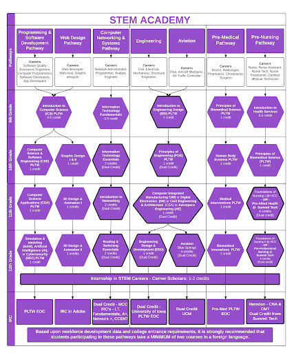

- Migrating Salesforce sites from Aura to Lightning Web Runtime to support cleaner custom URL paths, stronger performance, improved scalability, and better SEO.
- Creating test coverage for custom Lightning Web Components that previously had little or no automated testing.
- Modernizing Salesforce site architecture while improving long-term maintainability for future development work.
Hi! My name is
Jina Walbourne
I'm a software developer who cares just as much about the "why" behind a feature as I do about clean code. I untangle messy ideas and build them right.
My Approach
Build thoughtfully. Test carefully. Improve continuously.
- 2
- Irving Oil co-op terms
- 2M+
- Loyalty records supported
- 3
- Featured engineering projects
- 0
- Manual reward validation steps after automation
Background
Exploring systems. Building solutions.
Who I am
I’ve worked across frontend and backend development, mobile projects, automation, and AI tools. I enjoy getting into different parts of a project and understanding how they fit together, especially when there’s an opportunity to learn something new or approach a problem from a different angle. I like building things that are useful, but I also care about how they’re built and what happens behind the scenes.
What I value
Attention to detail
I care about the small things, especially the ones that are easy to overlook.
Curiosity
I like understanding how things work and asking what could be done differently.
Safety & trust
Technology should be reliable, secure, and something people can trust.
Better ways
I’m always open to questioning the obvious solution and finding a better one.
Experience
Engineering work focused on systems that last.
- Developed Apex and Salesforce Flow automation to validate dealer rewards against a loyalty dataset of 2M+ records, reducing manual employee validation to zero.
- Rebuilt legacy Genesys routing logic in Salesforce with Amazon Connect, recreating routing workflows end-to-end on a single Salesforce-based platform.
- Designed a callback analysis flow to measure customer callback completion time and help teams identify bottlenecks affecting SLA performance.
- Created Amazon Connect telephony flows integrated with AWS Lambda to improve call-forwarding logic and streamline automated routing.
- Built and deployed an Einstein Bot for customer feedback, using Apex to automate case creation and designing the conversational submission flow in Salesforce.
Selected Projects
Software projects with clear technical intent.
2025
AI practice tool
AI Sales Coach
Inspired to practice sales training, I built this tool to simulate real-time objection handling using GPT-powered models.
2024
Compiler fundamentals
Basic Front-end Compiler for JSON
Implemented a recursive descent parser to perform lexical, syntactic, and semantic analysis on JSON structures.

2024
Algorithms
Course Scheduler
Developed a course scheduler that manages university courses and prerequisites, detecting cyclic dependencies using Depth First Search (DFS).
Skills
Tools I use to build, test, and ship.
Programming Languages
Java
HTML
CSS
JavaScript
Python
x86 Assembly
MySQL
TypeScript
IDEs
Visual Studio Code
IntelliJ IDEA
Eclipse
Version Control
Git
GitHub
GitLab
Testing Tools
JUnit
UI Testing
Playwright
Frameworks & Libraries
React
Contact
Let's connect.
I am open to software development opportunities, collaborative projects, and technical conversations.